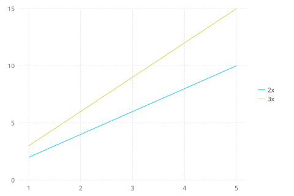
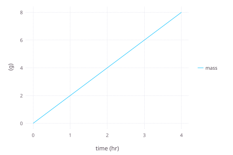
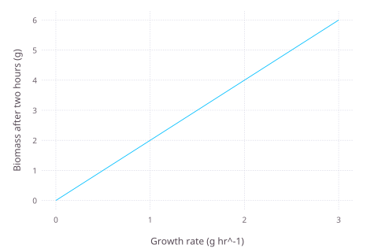

Inspect and Visualize Models
Inspection should come before editing configuration or selecting output. Cropbox provides complementary views of a model type, an instance, and simulation data.
List parameters
using Cropbox
@system InspectDemo(Controller) begin
rate: growth_rate => 2 ~ preserve(parameter, u"g/hr")
mass(rate) ~ accumulate(u"g")
end
parameters(InspectDemo)Config for 1 system:
| InspectDemo | ||
| rate | = | 2 g hr^-1 |
Useful options are:
alias = true: show aliases rather than short names;recursive = true: include parameters in nested systems;exclude = (...): omit infrastructure or already visited systems;scope = module: choose where defaults are evaluated when inspecting a type.
For an instance, parameters(s) reports current values rather than declaration defaults.
Inspect declarations and values
look(InspectDemo)
look(InspectDemo, :mass)[doc]
[system]
InspectDemo
context
config
rate (growth_rate)
mass[doc]
[code]
mass(rate) ~ accumulate(u"g")On an instance, look also displays the current value.
s = instance(InspectDemo)
look(s, :mass)[doc]
[code]
mass(rate) ~ accumulate(u"g")
[value]
0.0 gThe macro form avoids quoting a variable name:
@look InspectDemo.mass[doc]
[code]
mass(rate) ~ accumulate(u"g")@look s.f(x) has another meaning: it evaluates a function-like Cropbox variable. Use the function form look(s, :f) when the goal is declaration inspection.
Inspect dependency relationships
look shows declarations; visualize shows their relationships without running a simulation:
d = visualize(InspectDemo)
-->
<!-- Pages: 1 -->
<svg width="355pt" height="180pt"
viewBox="0.00 0.00 355.00 180.00" xmlns="http://www.w3.org/2000/svg" xmlns:xlink="http://www.w3.org/1999/xlink">
<g id="graph0" class="graph" transform="scale(1 1) rotate(0) translate(4 175.88)">
<polygon fill="white" stroke="none" points="-4,4 -4,-175.88 351.08,-175.88 351.08,4 -4,4"/>
<!-- 1&%2345;>2 -->
<g id="edge1" class="edge">
<title>1&%2345;>2</title>
<path fill="none" stroke="black" stroke-width="0.3" d="M40.08,-127.22C40.08,-123.51 40.08,-118.86 40.08,-114.86"/>
<polygon fill="black" stroke="black" stroke-width="0.3" points="40.08,-113.08 40.98,-115.08 40.08,-113.72 40.08,-115.08 40.08,-115.08 40.08,-115.08 40.08,-113.72 39.18,-115.08 40.08,-113.08"/>
</g>
<!-- 2&%2345;>3 -->
<g id="edge2" class="edge">
<title>2&%2345;>3</title>
<path fill="none" stroke="black" stroke-width="0.3" d="M42.34,-97.47C48.14,-80.79 63.48,-36.62 70.04,-17.75"/>
<polygon fill="black" stroke="black" stroke-width="0.3" points="70.67,-15.92 70.87,-18.11 70.46,-16.52 70.02,-17.81 70.02,-17.81 70.02,-17.81 70.46,-16.52 69.17,-17.51 70.67,-15.92"/>
</g>
<!-- 2&%2345;>6 -->
<g id="edge3" class="edge">
<title>2&%2345;>6</title>
<path fill="none" stroke="black" stroke-width="0.2" d="M58.5,-97.34C71.06,-92.8 87.76,-86.76 101.03,-81.97"/>
<polygon fill="black" stroke="black" stroke-width="0.2" points="101.04,-82.71 102.68,-81.37 100.56,-81.39 101.04,-82.71"/>
</g>
<!-- 2&%2345;>7 -->
<g id="edge4" class="edge">
<title>2&%2345;>7</title>
<path fill="none" stroke="black" stroke-width="0.2" d="M60.51,-104.19C84.12,-103.53 123.39,-99.69 152.08,-82.9 165.29,-75.17 175.87,-60.71 182.06,-50.73"/>
<polygon fill="black" stroke="black" stroke-width="0.2" points="182.64,-51.13 183.08,-49.06 181.44,-50.4 182.64,-51.13"/>
</g>
<!-- 4&%2345;>1 -->
<g id="edge5" class="edge">
<title>4&%2345;>1</title>
<path fill="none" stroke="black" stroke-width="0.2" d="M295.58,-161.27C248.69,-156.63 120.02,-143.91 65.27,-138.49"/>
<polygon fill="none" stroke="black" stroke-width="0.2" points="65.4,-137.8 63.34,-138.3 65.26,-139.19 65.4,-137.8"/>
</g>
<!-- 4&%2345;>3 -->
<g id="edge6" class="edge">
<title>4&%2345;>3</title>
<path fill="none" stroke="black" stroke-width="0.2" d="M320.29,-156.4C330.27,-146.49 347.08,-126.74 347.08,-106 347.08,-106 347.08,-106 347.08,-72 347.08,-21.13 165.42,-11.33 97.93,-9.45"/>
<polygon fill="black" stroke="black" stroke-width="0.2" points="98.29,-8.76 96.27,-9.4 98.25,-10.16 98.29,-8.76"/>
</g>
<!-- 4&%2345;>5 -->
<g id="edge7" class="edge">
<title>4&%2345;>5</title>
<path fill="none" stroke="black" stroke-width="0.2" stroke-dasharray="1,5" d="M310.3,-156.31C303.65,-140.33 286.87,-99.97 279.57,-82.4"/>
<polygon fill="none" stroke="black" stroke-width="0.2" points="278.19,-81.17 279.67,-80.55 280.28,-82.03 278.8,-82.64 278.19,-81.17"/>
<polyline fill="none" stroke="black" stroke-width="0.2" points="279.54,-82.34 279.7,-82.71"/>
</g>
<!-- 5&%2345;>7 -->
<g id="edge8" class="edge">
<title>5&%2345;>7</title>
<path fill="none" stroke="black" stroke-width="0.2" d="M263.47,-67.42C249.58,-62.37 227,-54.15 210.16,-48.03"/>
<polygon fill="black" stroke="black" stroke-width="0.2" points="210.54,-47.43 208.43,-47.4 210.07,-48.74 210.54,-47.43"/>
</g>
<!-- 6&%2345;>3 -->
<g id="edge9" class="edge">
<title>6&%2345;>3</title>
<path fill="none" stroke="black" stroke-width="0.2" d="M115.91,-62.97C106.24,-50.78 89.12,-29.21 79.72,-17.37"/>
<polygon fill="black" stroke="black" stroke-width="0.2" points="80.37,-17.06 78.58,-15.93 79.27,-17.93 80.37,-17.06"/>
</g>
<!-- 6&%2345;>7 -->
<g id="edge10" class="edge">
<title>6&%2345;>7</title>
<path fill="none" stroke="black" stroke-width="0.3" d="M141.53,-62.92C149.69,-58.9 159.33,-54.15 167.7,-50.03"/>
<polygon fill="black" stroke="black" stroke-width="0.3" points="169.47,-49.16 168.08,-50.85 168.91,-49.44 167.68,-50.04 167.68,-50.04 167.68,-50.04 168.91,-49.44 167.28,-49.23 169.47,-49.16"/>
</g>
<!-- 7&%2345;>3 -->
<g id="edge11" class="edge">
<title>7&%2345;>3</title>
<path fill="none" stroke="black" stroke-width="0.2" d="M168.04,-32.95C148.59,-28.04 119.01,-20.58 98.04,-15.3"/>
<polygon fill="black" stroke="black" stroke-width="0.2" points="98.44,-14.67 96.33,-14.86 98.1,-16.03 98.44,-14.67"/>
</g>
<!-- 1 -->
<g id="node1" class="node">
<title>1</title>
<text xml:space="preserve" text-anchor="middle" x="40.08" y="-132.07" font-family="Courier,monospace" font-size="9.00">∘context</text>
</g>
<!-- 2 -->
<g id="node2" class="node">
<title>2</title>
<text xml:space="preserve" text-anchor="middle" x="40.08" y="-102.08" font-family="Courier,monospace" font-size="9.00">context</text>
</g>
<!-- 3 -->
<g id="node3" class="node">
<title>3</title>
<text xml:space="preserve" text-anchor="middle" x="73.08" y="-5.08" font-family="Courier,monospace" font-size="9.00">⋆context</text>
</g>
<!-- 4 -->
<g id="node4" class="node">
<title>4</title>
<text xml:space="preserve" text-anchor="middle" x="313.08" y="-161.07" font-family="Courier,monospace" font-size="9.00">config</text>
</g>
<!-- 5 -->
<g id="node5" class="node">
<title>5</title>
<text xml:space="preserve" text-anchor="middle" x="276.08" y="-70.08" font-family="Courier,monospace" font-size="9.00">rate</text>
</g>
<!-- 6 -->
<g id="node6" class="node">
<title>6</title>
<polygon fill="none" stroke="black" stroke-width="0.5" points="143.06,-82.9 103.1,-82.9 103.1,-63.1 143.06,-63.1 143.06,-82.9"/>
<text xml:space="preserve" text-anchor="middle" x="123.08" y="-70.08" font-family="Courier,monospace" font-size="9.00">mass</text>
</g>
<!-- 7 -->
<g id="node7" class="node">
<title>7</title>
<polygon fill="none" stroke="black" stroke-width="0.5" points="208.06,-48.9 168.1,-48.9 168.1,-29.1 208.06,-29.1 208.06,-48.9"/>
<text xml:space="preserve" text-anchor="middle" x="188.08" y="-36.08" font-family="Courier,monospace" font-size="9.00">⋆mass</text>
</g>
</g>
</svg>
)
h = visualize(InspectDemo; kind = :hierarchy)
-->
<!-- Pages: 1 -->
<svg width="92pt" height="50pt"
viewBox="0.00 0.00 92.00 50.00" xmlns="http://www.w3.org/2000/svg" xmlns:xlink="http://www.w3.org/1999/xlink">
<g id="graph0" class="graph" transform="scale(1 1) rotate(0) translate(4 46.14)">
<polygon fill="white" stroke="none" points="-4,4 -4,-46.14 88.28,-46.14 88.28,4 -4,4"/>
<!-- 2&%2345;>1 -->
<g id="edge1" class="edge">
<title>2&%2345;>1</title>
<path fill="none" stroke="black" stroke-width="0.2" stroke-dasharray="5,2" d="M42.14,-15.7C42.14,-18.3 42.14,-21.34 42.14,-24.14"/>
<polygon fill="black" stroke="black" stroke-width="0.2" points="41.44,-24.12 42.14,-26.12 42.84,-24.12 41.44,-24.12"/>
</g>
<!-- 1 -->
<g id="node1" class="node">
<title>1</title>
<text xml:space="preserve" text-anchor="start" x="13.27" y="-32.22" font-family="Courier,monospace" font-weight="bold" font-size="9.00">InspectDemo</text>
</g>
<!-- 2 -->
<g id="node2" class="node">
<title>2</title>
<text xml:space="preserve" text-anchor="start" x="15.89" y="-6.21" font-family="Courier,monospace" font-weight="bold" font-size="9.00">Controller</text>
</g>
</g>
</svg>
)
The default kind = :dependency follows variables and generated update stages; kind = :hierarchy follows mixins and child systems, omitting nested Context infrastructure. Dashed hierarchy edges denote mixins. Cropbox uses its bundled Graphviz executable to render either graph as SVG on supported platforms. A static copy can be written for documentation:
Cropbox.writeimage("dependency", d; format = :svg)
Cropbox.writeimage("hierarchy", h; format = :svg)Download the generated dependency graph or hierarchy graph.


The text representation remains available without invoking Graphviz.
To inspect just the inputs to mass, select its upstream neighborhood:
visualize(InspectDemo, :mass; direction = :up)
-->
<!-- Pages: 1 -->
<svg width="355pt" height="180pt"
viewBox="0.00 0.00 355.00 180.00" xmlns="http://www.w3.org/2000/svg" xmlns:xlink="http://www.w3.org/1999/xlink">
<g id="graph0" class="graph" transform="scale(1 1) rotate(0) translate(4 175.88)">
<polygon fill="white" stroke="none" points="-4,4 -4,-175.88 351.08,-175.88 351.08,4 -4,4"/>
<!-- 1&%2345;>2 -->
<g id="edge1" class="edge">
<title>1&%2345;>2</title>
<path fill="none" stroke="black" stroke-width="0.3" d="M40.08,-127.22C40.08,-123.51 40.08,-118.86 40.08,-114.86"/>
<polygon fill="black" stroke="black" stroke-width="0.3" points="40.08,-113.08 40.98,-115.08 40.08,-113.72 40.08,-115.08 40.08,-115.08 40.08,-115.08 40.08,-113.72 39.18,-115.08 40.08,-113.08"/>
</g>
<!-- 2&%2345;>3 -->
<g id="edge2" class="edge">
<title>2&%2345;>3</title>
<path fill="none" stroke="black" stroke-width="0.3" d="M42.34,-97.47C48.14,-80.79 63.48,-36.62 70.04,-17.75"/>
<polygon fill="black" stroke="black" stroke-width="0.3" points="70.67,-15.92 70.87,-18.11 70.46,-16.52 70.02,-17.81 70.02,-17.81 70.02,-17.81 70.46,-16.52 69.17,-17.51 70.67,-15.92"/>
</g>
<!-- 2&%2345;>6 -->
<g id="edge3" class="edge">
<title>2&%2345;>6</title>
<path fill="none" stroke="black" stroke-width="0.2" d="M58.5,-97.34C71.06,-92.8 87.76,-86.76 101.03,-81.97"/>
<polygon fill="black" stroke="black" stroke-width="0.2" points="101.04,-82.71 102.68,-81.37 100.56,-81.39 101.04,-82.71"/>
</g>
<!-- 2&%2345;>7 -->
<g id="edge4" class="edge">
<title>2&%2345;>7</title>
<path fill="none" stroke="black" stroke-width="0.2" d="M60.51,-104.19C84.12,-103.53 123.39,-99.69 152.08,-82.9 165.29,-75.17 175.87,-60.71 182.06,-50.73"/>
<polygon fill="black" stroke="black" stroke-width="0.2" points="182.64,-51.13 183.08,-49.06 181.44,-50.4 182.64,-51.13"/>
</g>
<!-- 4&%2345;>1 -->
<g id="edge5" class="edge">
<title>4&%2345;>1</title>
<path fill="none" stroke="black" stroke-width="0.2" d="M295.58,-161.27C248.69,-156.63 120.02,-143.91 65.27,-138.49"/>
<polygon fill="none" stroke="black" stroke-width="0.2" points="65.4,-137.8 63.34,-138.3 65.26,-139.19 65.4,-137.8"/>
</g>
<!-- 4&%2345;>3 -->
<g id="edge6" class="edge">
<title>4&%2345;>3</title>
<path fill="none" stroke="black" stroke-width="0.2" d="M320.29,-156.4C330.27,-146.49 347.08,-126.74 347.08,-106 347.08,-106 347.08,-106 347.08,-72 347.08,-21.13 165.42,-11.33 97.93,-9.45"/>
<polygon fill="black" stroke="black" stroke-width="0.2" points="98.29,-8.76 96.27,-9.4 98.25,-10.16 98.29,-8.76"/>
</g>
<!-- 4&%2345;>5 -->
<g id="edge7" class="edge">
<title>4&%2345;>5</title>
<path fill="none" stroke="black" stroke-width="0.2" stroke-dasharray="1,5" d="M310.3,-156.31C303.65,-140.33 286.87,-99.97 279.57,-82.4"/>
<polygon fill="none" stroke="black" stroke-width="0.2" points="278.19,-81.17 279.67,-80.55 280.28,-82.03 278.8,-82.64 278.19,-81.17"/>
<polyline fill="none" stroke="black" stroke-width="0.2" points="279.54,-82.34 279.7,-82.71"/>
</g>
<!-- 5&%2345;>7 -->
<g id="edge8" class="edge">
<title>5&%2345;>7</title>
<path fill="none" stroke="black" stroke-width="0.2" d="M263.47,-67.42C249.58,-62.37 227,-54.15 210.16,-48.03"/>
<polygon fill="black" stroke="black" stroke-width="0.2" points="210.54,-47.43 208.43,-47.4 210.07,-48.74 210.54,-47.43"/>
</g>
<!-- 6&%2345;>3 -->
<g id="edge9" class="edge">
<title>6&%2345;>3</title>
<path fill="none" stroke="black" stroke-width="0.2" d="M115.91,-62.97C106.24,-50.78 89.12,-29.21 79.72,-17.37"/>
<polygon fill="black" stroke="black" stroke-width="0.2" points="80.37,-17.06 78.58,-15.93 79.27,-17.93 80.37,-17.06"/>
</g>
<!-- 6&%2345;>7 -->
<g id="edge10" class="edge">
<title>6&%2345;>7</title>
<path fill="none" stroke="black" stroke-width="0.3" d="M141.53,-62.92C149.69,-58.9 159.33,-54.15 167.7,-50.03"/>
<polygon fill="black" stroke="black" stroke-width="0.3" points="169.47,-49.16 168.08,-50.85 168.91,-49.44 167.68,-50.04 167.68,-50.04 167.68,-50.04 168.91,-49.44 167.28,-49.23 169.47,-49.16"/>
</g>
<!-- 7&%2345;>3 -->
<g id="edge11" class="edge">
<title>7&%2345;>3</title>
<path fill="none" stroke="black" stroke-width="0.2" d="M168.04,-32.95C148.59,-28.04 119.01,-20.58 98.04,-15.3"/>
<polygon fill="black" stroke="black" stroke-width="0.2" points="98.44,-14.67 96.33,-14.86 98.1,-16.03 98.44,-14.67"/>
</g>
<!-- 1 -->
<g id="node1" class="node">
<title>1</title>
<text xml:space="preserve" text-anchor="middle" x="40.08" y="-132.07" font-family="Courier,monospace" font-size="9.00">∘context</text>
</g>
<!-- 2 -->
<g id="node2" class="node">
<title>2</title>
<text xml:space="preserve" text-anchor="middle" x="40.08" y="-102.08" font-family="Courier,monospace" font-size="9.00">context</text>
</g>
<!-- 3 -->
<g id="node3" class="node">
<title>3</title>
<text xml:space="preserve" text-anchor="middle" x="73.08" y="-5.08" font-family="Courier,monospace" font-size="9.00">⋆context</text>
</g>
<!-- 4 -->
<g id="node4" class="node">
<title>4</title>
<text xml:space="preserve" text-anchor="middle" x="313.08" y="-161.07" font-family="Courier,monospace" font-size="9.00">config</text>
</g>
<!-- 5 -->
<g id="node5" class="node">
<title>5</title>
<text xml:space="preserve" text-anchor="middle" x="276.08" y="-70.08" font-family="Courier,monospace" font-size="9.00">rate</text>
</g>
<!-- 6 -->
<g id="node6" class="node">
<title>6</title>
<polygon fill="none" stroke="black" stroke-width="0.5" points="143.06,-82.9 103.1,-82.9 103.1,-63.1 143.06,-63.1 143.06,-82.9"/>
<text xml:space="preserve" text-anchor="start" x="112.58" y="-71.08" font-family="Courier,monospace" font-weight="bold" font-size="9.00">mass</text>
</g>
<!-- 7 -->
<g id="node7" class="node">
<title>7</title>
<polygon fill="none" stroke="black" stroke-width="0.5" points="208.06,-48.9 168.1,-48.9 168.1,-29.1 208.06,-29.1 208.06,-48.9"/>
<text xml:space="preserve" text-anchor="start" x="174.95" y="-37.08" font-family="Courier,monospace" font-weight="bold" font-size="9.00">⋆mass</text>
</g>
</g>
</svg>
)
See Model structure for shape and arrow meanings, system grouping, and the difference between selecting neighborhoods and paths. These are static declaration graphs, not runtime traces. Explain the scientific relationships alongside the graph rather than inferring them from node shape.
For worked model examples, compare the accumulating state in Logistic Growth, the grouped input-to-state path in Weather-driven Phenology, and a local process in SimpleCrop.
Navigate an instance
dive(s) opens a terminal menu for walking through nested systems and values. It is not interactive in Jupyter; there it falls back to a simpler display. Use look, property access, or explicit output paths in notebooks.
Read values in Julia code
s.rate'
value(s.mass)0.0 gPostfix ' is concise for interactive work. value(...) is clearer in helper functions. Do not assume a system field is a bare number.
Visualize an existing result
For a side-by-side guide to argument combinations and their resulting plots, see Choose a plotting call. That reference contains the full examples for both Makie and UnicodePlots.
visualize works directly with vectors, and visualize! adds another series to the same result:
x = collect(1:5)
p = visualize(x, 2 .* x; kind = :line, name = "2x", ylim = (0, 15))
visualize!(p, x, 3 .* x; kind = :line, name = "3x")
The explicit range reserves space for both curves, including on a fixed-size terminal canvas.
This form is useful for calculated curves that do not require a simulation. For model output, retain the DataFrame and name its columns explicitly.
r = simulate(InspectDemo; stop = 4u"hr", target = :mass)
visualize(r, :time, :mass; kind = :line)
To simulate and plot in one call, pass the system type instead of a DataFrame, as in the Quick Start. The Visualization API compares both call forms.
Interactively explore parameters
In JupyterLab or Notebook with jupyter-server-proxy, manipulate adds widgets that update a visualization as parameter values change.
manipulate(InspectDemo, :time, :mass;
parameters = InspectDemo => (
rate = 0:0.5:3,
),
stop = 4u"hr",
kind = :line,
)Use interaction to explore sensitivity and plausible ranges. For reproducible analysis, record explicit configurations and run them with simulate; an interactive widget is not a substitute for a saved experiment design.
Plot a parameter response
For a model with a configurable input, create one configuration per input value and compare one time point from each run. Here snap keeps only the state at two hours.
configs = @config !(InspectDemo => :rate => 0:0.5:3)
responses = simulate(InspectDemo;
configs,
stop = 2u"hr",
snap = s -> s.context.clock.time' == 2u"hr",
target = [:rate, :mass],
)
visualize(responses, :rate, :mass;
kind = :line,
xlab = "Growth rate",
ylab = "Biomass after two hours",
legend = false,
)
There is one point per growth rate, with biomass equal to the rate multiplied by two hours. Without selecting a time point, this dynamic model contributes every saved snapshot at each rate; joining those rows creates a sawtooth rather than the intended response curve.
Keep responses for later analysis. The Visualization API also shows the xstep shorthand for direct response plots, group for separate series, and two input ranges for a heatmap.
Compare observations and estimates
visualize(obs, Model, ...) overlays observations and model output, while visualize(obs, Model, target; index = ...) can produce an observation-versus- estimate plot. See Evaluate and Calibrate Models for a complete workflow.